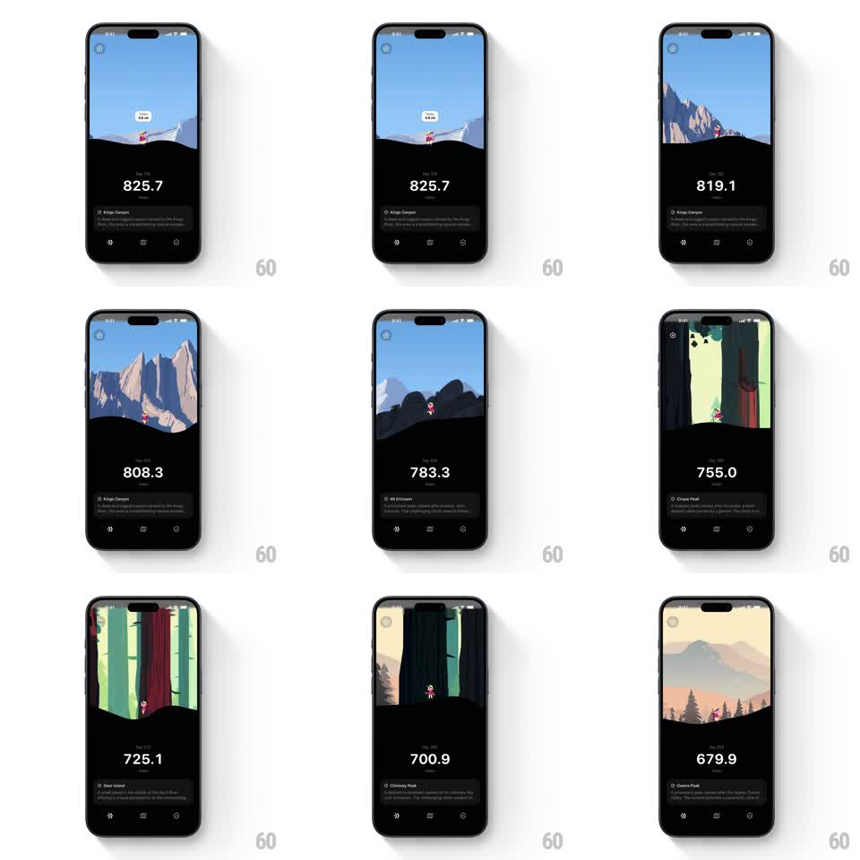

Media
Frame-by-frame

Rebuild this interaction 1:1: Thru's scroll-to-walk journey - horizontally scrolling scrubs a thru-hike: the pixel hiker walks across parallax landscapes (Kings Canyon, Mt Whitney, Kennedy Meadows, Owens Peak) while the miles counter ticks down in real time.

Rebuild this interaction 1:1: Thru's scroll-to-walk journey - horizontally scrolling scrubs a thru-hike: the pixel hiker walks across parallax landscapes (Kings Canyon, Mt Whitney, Kennedy Meadows, Owens Peak) while the miles counter ticks down in real time.
## Integration
Integration: stack-agnostic spec - springs given as stiffness/damping, timed motions as duration + curve; map every value to your framework and animation library of choice.
## Scene
Split dark screen: the top half is a pixel-art landscape viewport (snow peaks, granite walls, redwood forest, desert sunset) with a tiny hiker and a floating distance chip ("0.6 mi" / "9.6 mi"); the bottom half shows "Day 118", a big miles-remaining counter (825.7), a location card (name + description), and bottom nav icons.
## Motion spec
Pattern: scroll-scrubbed journey, gesture-driven.
- Scrub: horizontal drag moves the world 1:1 - foreground hills move fastest, mid mountains at 0.6x, sky at 0.2x (parallax).
- Hiker: the mascot stays near center and plays its walk cycle while scrolling (8-frame loop, speed tied to scroll velocity); it idles when scrolling stops.
- Counter: the miles number ticks down continuously with scroll distance (1 screen-width ~ 3 miles), easing to rest (300ms).
- Locations: crossing a region boundary crossfades the landscape palette and slides the location card's text (250ms).
## Calibration
- Everything is position-driven by scroll - scrubbing backward walks the journey in reverse, counter included.
- The bottom panel layout never changes; only values and the location card update.
## Reduced motion
Tap arrows advance regions with 300ms crossfades; counter jumps.
## Don't miss
- The walk cycle speed tracks scroll velocity - fast flings make the hiker hustle.
- The distance chip floats above the hiker and bobs gently (+-2px, 1.2s).